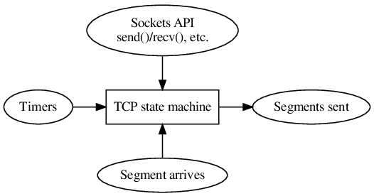
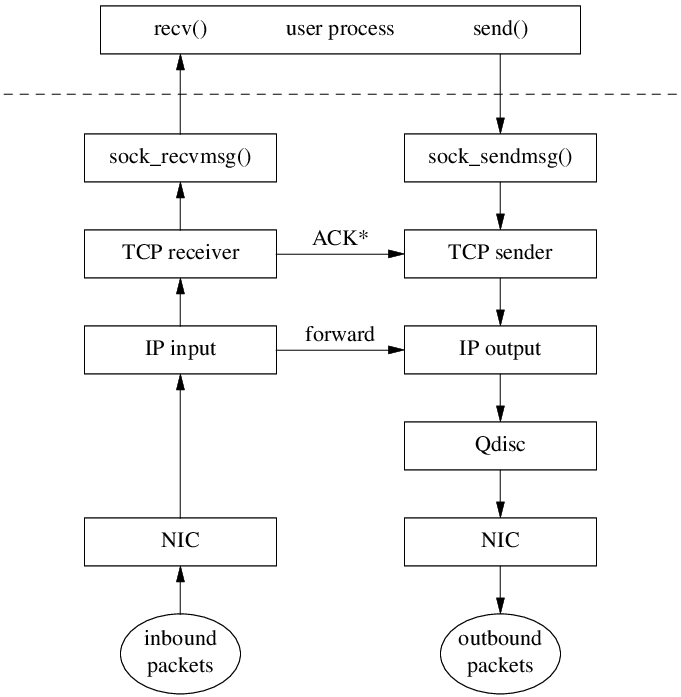
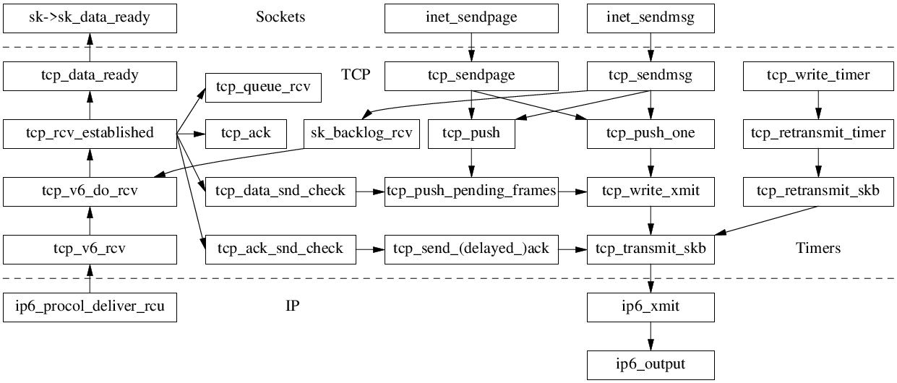

Shuo Chen's notes on Linux TCP/IP stack
Source of this site: https://github.com/chenshuo/tcpip-study
The TCP state machine has three inputs: Sockets API, Timers, and Data arrives.

Overview of packet flow:

A closer look at Linux networking datapath callgraph:

TCP/IP Reference
TCP/IP Illustrated (vol. 1): The Protocols, 2nd ed. by Kevin R. Fall and W. Richard Stevens, 2011-11.
- RFC793 Transmission Control Protocol, 1981-09
- RFC896 Nagle algorithm, 1984-01. Minshall's update.
- RFC1122 Requirements for Internet Hosts --- Communication Layers, 1989-10
- RFC5681 TCP Congestion Control, 2009-09
- RFC6093 On the Implementation of the TCP Urgent Mechanism, 2011-01, which recommends against the use of urgent mechanism.
- RFC6582 The NewReno Modification to TCP's Fast Recovery Algorithm, 2012-04
- RFC7323 TCP Extensions for High Performance, obsoletes RFC1323
- RFC7413 TCP Fast Open
- RFC7414 TCP Roadmap
- RFC8289 Controlled Delay Active Queue Management
- RFC8312 CC-CUBIC, Linux's default congestion control algorithm since 2.6.19, replaced BIC (default from 2.6.8 till 2.6.18.x). FreeBSD will use CUBIC as the new default, replacing NewReno.
- RFC8985 RACK-TLP Loss Detection Algorithm for TCP
- RFC9293 Transmission Control Protocol (TCP), obsoletes RFC793 after 40+ yrs, 2022-08.
- Many others in 'Links' page.
TCP/IP Implementations
AFAIK, there are four independent mainstream TCP/IP stacks: BSD, Linux, Windows, and Solaris (Mentat TCP and archived page. I guess BSD stack is also used on macOS and iOS, Android uses Linux stack. So I guess most of traffic on Internet happens between the first three TCP/IP stacks.
-
BSD family, BSD family tree

- 4.2BSD was the first widely available TCP/IP implementation.
- 4.4BSD-Lite is convered in great detail in TCP/IP Illustrated (vol. 2): The Implementation by Gary R. Wright and W. Richard Stevens, 1995.
- FreeBSD, http://caia.swin.edu.au/urp/newtcp/
- http://www.f-stack.org/ User space TCP/IP stack from FreeBSD 11.0, https://github.com/pkelsey/libuinet.
-
Linux, some early history
- First in 0.98 by Ross Biro,
net/tcp, 1992-09-29 - Switched to a new one (NET2) by Fred van Kempen in 0.99.10,
net/inet, 1993-06-07 - NET3 by Swansea University Computer Society (Alan Cox) took place in 1.1.4.
- In 1.2.10 -> 1.3.0, moved from
net/inettonet/ipv4. Last update tonet/inetwas in 1.2.13 - In 2.1.8, added
net/ipv6 - In 2.2.0pre5, renamed to NET4, early 1999.
- https://blog.cloudflare.com/why-we-use-the-linux-kernels-tcp-stack/
- https://jvns.ca/blog/2016/06/30/why-do-we-use-the-linux-kernels-tcp-stack/
- First in 0.98 by Ross Biro,
-
- For microcontrollers, small footprint
- gvisor / netstack
- User space, in Golang
- Others, mostly user space
- Educational OSes
- Minix 2.x has its own TCP/IP stack, 3.x uses lwIP instead.
- Xinu code, covered in Internetworking With TCP/IP Volume II: Design, Implementation, and Internals, 3rd ed. by Douglas E. Comer and David L. Stevens, 1999.
- Toy implementations
Tools
- packetdrill is a unittest for entire TCP/IP stack.
- neper is a performance testing tool to generate workloads.
Recent changes
Recent changes that I am aware of.
- EDT netdev 0x12 Keynote:
Evolving from AFAP: Teaching NICs about time by Van Jacobson,
slides and video.
- Linux 4.20 switched to Early Departure Time model in 2018/09, and refined in 2018/10.
Historical notes
In 2004, Vinton Cerf and Robert Kahn received the ACM Turing Award for their foundational work on TCP/IP. A Protocol for Packet Network Intercommunication, May 1974.